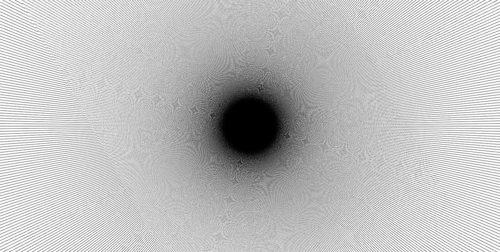

Generatore di pattern moiré con sintesi audio-video sincronizzata. Le figure che vedete e quello che sentite sono guidati dagli stessi parametri.

Quattro famiglie di pattern — linee, griglia, cerchi, radiale — sovrapposte con uno sfasamento d'angolo regolabile, da cui nasce l'interferenza moiré. Densità, angolo, scala e velocità si controllano in tempo reale.
La parte audio è una sintesi FM agganciata agli stessi controlli, quindi cambiare la densità visiva sposta il timbro. Non è una sonificazione aggiunta dopo, i due motori condividono lo stato.